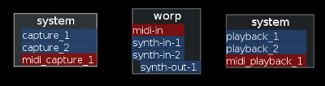

While Worp itself does not depend on Jack, a Jack library is available which provides some essential functionalty for making sound and music.
To use jack from a worp script, first a jack client object must be created. The following code creates a jack object 'j', and uses 'foo' as the jack client name:
Now that a jack client is available, we can use it to do some work:
Connecting Jack ports is done with the ':connect()' method of the jack client object:
The connect function does only one thing: it will try to connect all ports matched by 'FROM' to all ports of the same types matched by 'TO'. If the 'TO' argument is not given, it will match any jack port in the sytem with the same port type.
For example, given a system with the following (unconnected) jack clients and ports:

When calling:
Worp will:
The result will be the following graph:
For more fine grained control, ports can be specified with more detail:
The jack client provides two methods for receiving midi data:
For example, the following snippet will print all received midi notes and control changes for midi channel 1 and CC #5:
The DSP API is currently being reworked, so the documentation below will be outdated soon
The jack client object can be used to connect Worp to a number of Jack audio ports. The call
will create a number of audio ports with the name NAME-[in|out]-#, and will from that moment call the given function FN for each audio sample.
For example, the following function will generate a 1 Khz sine wave on a single Jack output port called worp:beep-out-1:
Worp provides a convenient abstraction layer for doing digital signal processing, for more details see the dsp page.